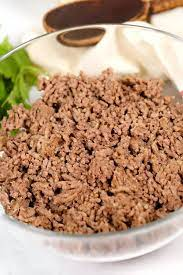

Dog Meal

Description:
This is the recipe prepared twice daily for our senior dog
- One meatball sized portion of ground beef
- Half a chicken liver
- One inch cube of beef liver
- Two slices of canned beets
- 6 or 7 pieces of canned green beans
- One package of probiotic powder (in morning)
- One pump of fish oil
Steps
- Saute ground beef and livers until beef is just cooked
- Finely chop livers and vegetables
- Mix everything together with remaining items in food dish